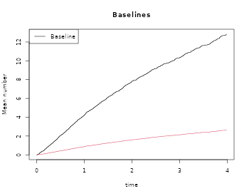
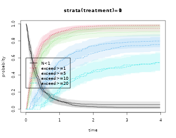

IPCW Cumulative Cost
Klaus Holst & Thomas Scheike
2026-01-14
Source:vignettes/cumulative-cost.Rmd
cumulative-cost.RmdOverview
We here describe how to do regression modelling for cumulative cost $$\begin{align*} {\cal U}(t) & = \int_0^t Z(s) dN(s) \end{align*}$$ where is a counting process that registers the times at which the cost is realized and accumulated, and is the cost (or marks) at the event times. The counting process can be a mix of random and fixed times. The data would thus be represented in counting process format with the marks/costs going along with the event times. There are many additional uses of such cumulative process, for example, when considering time-lost in a recurrent events setting, that we return to below.
We can estimate the marginal mean of the cumulative process $$\begin{align*} \nu(t) & = E ( {\cal U}(t) ) \end{align*}$$ possibly for strata with standard errors based on the derived influence function.
We provide semi-parametric regression modelling using the proportional model $$\begin{align*} E ( {\cal U}(t) | X) & = \Lambda_0(t) \exp( X^T \beta). \end{align*}$$
In addition for a fixed time-point we can estimate the mean given covariates $$\begin{align*} E ( {\cal U}(t) | X) & = \exp( X^T \beta) \end{align*}$$ where is some maximum follow-up time.
- These quantities are estimated in a setting with independent
right-censoring given
,
and based on IPCW adjusted estimating equations.
- similarly to the Ghosh-Lin model for recurrent events
- A terminal event can be specified.
We also estimate the probability of exceeding thresholds over time $$\begin{align*} P ( {\cal U}(t) > k ) & = \mu_k(t), \end{align*}$$ and in the situation with a terminal this is based on a derived competing risks data that keeps track of the competing terminal event.
Regression modelling of this quantity is also possible using competing risks regression models, using for example, the cifreg function of mets.
HF-action data
Considering the HF-action data we simulate a severity score for each event.
library(mets)
data(hfactioncpx12)
hf <- hfactioncpx12
hf$severity <- abs((5+rnorm(741)*2))[hf$id]
proc_design <- mets:::proc_design
## marginal mean using formula
outNZ <- recurrentMarginal(Event(entry,time,status)~strata(treatment)+cluster(id)
+marks(severity),hf,cause=1,death.code=2)
plot(outNZ,se=TRUE)
summary(outNZ,times=3)
#> [[1]]
#> new.time mean se CI-2.5% CI-97.5% strata
#> 682 3 10.24832 0.6186346 9.104797 11.53546 0
#>
#> [[2]]
#> new.time mean se CI-2.5% CI-97.5% strata
#> 601 3 9.454503 0.6950555 8.185815 10.91982 1
outN <- recurrentMarginal(Event(entry,time,status)~strata(treatment)+cluster(id),data=hf,
cause=1,death.code=2)
plot(outN,se=TRUE,add=TRUE)
summary(outN,times=3)
#> [[1]]
#> new.time mean se CI-2.5% CI-97.5% strata
#> 682 3 2.118496 0.1138572 1.906692 2.353829 0
#>
#> [[2]]
#> new.time mean se CI-2.5% CI-97.5% strata
#> 601 3 1.924062 0.1216577 1.699801 2.177912 1For comparison we also compute the IPCW estimates with and without marks at time 3, using the linear model, and note that they are identical. Standard errors are however based on different formula that are asymptotically equivalent, and we note that they are very similar.
outNZ3 <- recregIPCW(Event(entry,time,status)~-1+treatment+cluster(id)+marks(severity),data=hf,
cause=1,death.code=2,time=3,cens.model=~strata(treatment),model="lin")
summary(outNZ3)
#> n events
#> 741 1281
#>
#> 741 clusters
#> coeffients:
#> Estimate Std.Err 2.5% 97.5% P-value
#> treatment0 10.24832 0.61860 9.03588 11.46075 0
#> treatment1 9.45450 0.69499 8.09234 10.81667 0
head(iid(outNZ3))
#> [,1] [,2]
#> 1 -0.0051841554 0.00000000
#> 2 0.0102241902 0.00000000
#> 3 0.0000000000 -0.03026973
#> 4 -0.0139508255 0.00000000
#> 5 -0.0004765366 0.00000000
#> 6 -0.0341093932 0.00000000
outN3 <- recregIPCW(Event(entry,time,status)~-1+treatment+cluster(id),data=hf,cause=1,death.code=2,time=3,
cens.model=~strata(treatment),model="lin")
summary(outN3)
#> n events
#> 741 1281
#>
#> 741 clusters
#> coeffients:
#> Estimate Std.Err 2.5% 97.5% P-value
#> treatment0 2.11850 0.11385 1.89535 2.34164 0
#> treatment1 1.92406 0.12165 1.68564 2.16248 0
head(iid(outN3))
#> [,1] [,2]
#> 1 0.0004542472 0.000000000
#> 2 0.0009756994 0.000000000
#> 3 0.0000000000 0.009301496
#> 4 -0.0029668336 0.000000000
#> 5 -0.0001120764 0.000000000
#> 6 -0.0070693971 0.000000000We also apply the semiparametric proportional cost model with IPCW adjustment:
propNZ <- recreg(Event(entry,time,status)~treatment+marks(severity)+cluster(id),data=hf,cause=1,death.code=2)
summary(propNZ)
#>
#> n events
#> 2132 1391
#>
#> 741 clusters
#> coeffients:
#> Estimate S.E. dU^-1/2 P-value
#> treatment1 -0.102856 0.090464 0.024319 0.2555
#>
#> exp(coeffients):
#> Estimate 2.5% 97.5%
#> treatment1 0.90226 0.75566 1.0773
plot(propNZ,main="Baselines")
GL <- recreg(Event(entry,time,status)~treatment+cluster(id),hf,cause=1,death.code=2)
summary(GL)
#>
#> n events
#> 2132 1391
#>
#> 741 clusters
#> coeffients:
#> Estimate S.E. dU^-1/2 P-value
#> treatment1 -0.110404 0.078656 0.053776 0.1604
#>
#> exp(coeffients):
#> Estimate 2.5% 97.5%
#> treatment1 0.89547 0.76754 1.0447
plot(GL,add=TRUE,col=2) Those treated have 14 % lower cumulative severity and 11% lower number of expected events.
Exceed threshold
Finally, we also estimate the probability of exceeding a cumulative severity at 1,5,10
ooNZ <- prob.exceed.recurrent(Event(entry,time,status)~strata(treatment)+cluster(id)+marks(severity),data=hf,
cause=1,death.code=2,exceed=c(1,5,10,20))
plot(ooNZ,strata=1)
plot(ooNZ,strata=2,add=TRUE)
summary(ooNZ,times=3)
#> $`0`
#> $`0`$prob
#> times
#> 3 2.99865085
#> N<1 3 0.05046407
#> exceed>=1 3 0.94953593
#> exceed>=5 3 0.90305672
#> exceed>=10 3 0.78544505
#> exceed>=20 3 0.49877769
#>
#> $`0`$se
#> times
#> 3 2.99865085
#> N<1 3 0.01999300
#> exceed>=1 3 0.01999300
#> exceed>=5 3 0.02693354
#> exceed>=10 3 0.03918605
#> exceed>=20 3 0.05133898
#>
#> $`0`$lower
#> times
#> [1,] 3 2.99865085
#> [2,] 3 0.08885207
#> [3,] 3 0.91114793
#> [4,] 3 0.85178123
#> [5,] 3 0.71227737
#> [6,] 3 0.40765541
#>
#> $`0`$upper
#> times
#> [1,] 3 2.99865085
#> [2,] 3 0.01045872
#> [3,] 3 0.98954128
#> [4,] 3 0.95741889
#> [5,] 3 0.86612878
#> [6,] 3 0.61026834
#>
#>
#> $`1`
#> $`1`$prob
#> times
#> 3 2.99865085
#> N<1 3 0.01705929
#> exceed>=1 3 0.98294071
#> exceed>=5 3 0.96772447
#> exceed>=10 3 0.74154673
#> exceed>=20 3 0.51833754
#>
#> $`1`$se
#> times
#> 3 2.998650853
#> N<1 3 0.008885007
#> exceed>=1 3 0.008885007
#> exceed>=5 3 0.012103895
#> exceed>=10 3 0.043163511
#> exceed>=20 3 0.055744489
#>
#> $`1`$lower
#> times
#> [1,] 3 2.99865085
#> [2,] 3 0.03432023
#> [3,] 3 0.96567977
#> [4,] 3 0.94428969
#> [5,] 3 0.66159512
#> [6,] 3 0.41982703
#>
#> $`1`$upper
#> times
#> [1,] 3 2.9986509
#> [2,] 3 0.0000000
#> [3,] 3 1.0000000
#> [4,] 3 0.9917408
#> [5,] 3 0.8311602
#> [6,] 3 0.6399631Cumulative time lost for recurrent events
The cumulative time lost for recurrent events has been defined as $$\begin{align*} {\cal M}(t) = E[ \int_0^\tau (\tau-s) dN(s) ] = \int_0^\tau \mu(s) ds \end{align*}$$ where is the marginal mean of the recurrent events at time .
hf$lost5 <- 5-hf$time
RecLost <- recregIPCW(Event(entry,time,status)~-1+treatment+cluster(id)+marks(lost5),data=hf,
cause=1,death.code=2,time=5,cens.model=~strata(treatment),model="lin")
summary(RecLost)
#> n events
#> 741 1391
#>
#> 741 clusters
#> coeffients:
#> Estimate Std.Err 2.5% 97.5% P-value
#> treatment0 8.58300 0.42951 7.74118 9.42482 0
#> treatment1 7.66234 0.46400 6.75292 8.57177 0
head(iid(RecLost))
#> [,1] [,2]
#> 1 0.0016920221 0.00000000
#> 2 0.0073388996 0.00000000
#> 3 0.0000000000 0.02120478
#> 4 -0.0095548150 0.00000000
#> 5 -0.0005696809 0.00000000
#> 6 -0.0201750011 0.00000000SessionInfo
sessionInfo()
#> R version 4.5.2 (2025-10-31)
#> Platform: x86_64-pc-linux-gnu
#> Running under: Ubuntu 24.04.3 LTS
#>
#> Matrix products: default
#> BLAS: /usr/lib/x86_64-linux-gnu/openblas-pthread/libblas.so.3
#> LAPACK: /usr/lib/x86_64-linux-gnu/openblas-pthread/libopenblasp-r0.3.26.so; LAPACK version 3.12.0
#>
#> locale:
#> [1] LC_CTYPE=C.UTF-8 LC_NUMERIC=C LC_TIME=C.UTF-8
#> [4] LC_COLLATE=C.UTF-8 LC_MONETARY=C.UTF-8 LC_MESSAGES=C.UTF-8
#> [7] LC_PAPER=C.UTF-8 LC_NAME=C LC_ADDRESS=C
#> [10] LC_TELEPHONE=C LC_MEASUREMENT=C.UTF-8 LC_IDENTIFICATION=C
#>
#> time zone: UTC
#> tzcode source: system (glibc)
#>
#> attached base packages:
#> [1] stats graphics grDevices utils datasets methods base
#>
#> other attached packages:
#> [1] mets_1.3.9
#>
#> loaded via a namespace (and not attached):
#> [1] cli_3.6.5 knitr_1.51 rlang_1.1.7
#> [4] xfun_0.55 textshaping_1.0.4 jsonlite_2.0.0
#> [7] listenv_0.10.0 future.apply_1.20.1 lava_1.8.2
#> [10] htmltools_0.5.9 ragg_1.5.0 sass_0.4.10
#> [13] rmarkdown_2.30 grid_4.5.2 evaluate_1.0.5
#> [16] jquerylib_0.1.4 fastmap_1.2.0 numDeriv_2016.8-1.1
#> [19] yaml_2.3.12 mvtnorm_1.3-3 lifecycle_1.0.5
#> [22] timereg_2.0.7 compiler_4.5.2 codetools_0.2-20
#> [25] fs_1.6.6 htmlwidgets_1.6.4 Rcpp_1.1.1
#> [28] future_1.68.0 lattice_0.22-7 systemfonts_1.3.1
#> [31] digest_0.6.39 R6_2.6.1 parallelly_1.46.1
#> [34] parallel_4.5.2 splines_4.5.2 Matrix_1.7-4
#> [37] bslib_0.9.0 tools_4.5.2 RcppArmadillo_15.2.3-1
#> [40] globals_0.18.0 survival_3.8-3 pkgdown_2.2.0
#> [43] cachem_1.1.0 desc_1.4.3